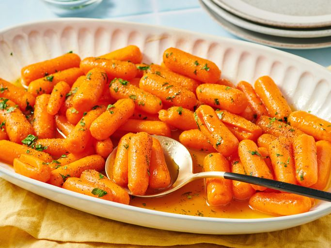

Home
Maple Glazed Carrots

Description:
These maple glazed carrots are a super easy side dish for any occasion.
The carrots have a nice sweet and salty flavor.
Ingredients (8 servings):
- 1 1 ½ pounds baby carrots
- 1/4 cup butter
- 1/3 cup maple syrup
- salt and ground black pepper to taste
- freshly chopped parsley for garnish
- 1 teaspoon chili powder, or to taste
Steps:
- Gather all ingredients.
-
Place carrots into a pot and cover with salted water; bring to a boil.
Reduce heat to medium-low and simmer until tender, 15 to 20 minutes.
- Drain and transfer carrots to a serving bowl.
-
Melt butter in a saucepan over medium-low heat. Stir maple syrup into
melted butter and cook until warmed, 1 to 2 minutes.
-
Pour over carrots and toss to coat; season with salt and ground black
pepper.